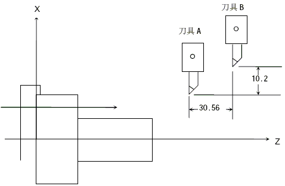
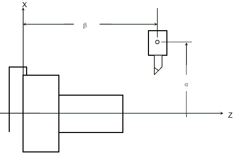
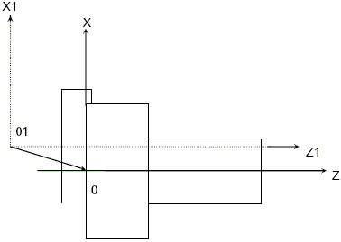
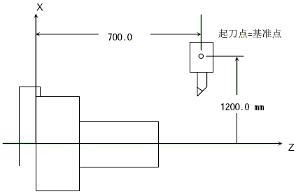
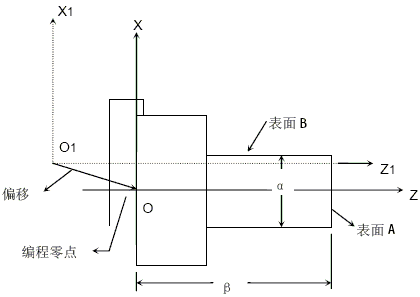

坐标系设定
用下列指令设定坐标系
G50 X(x) Z(z) ；
根据此指令，建立一个坐标系, 使刀具上的某一点, 例如刀尖在此坐标系中的坐标为(x , z )。
此坐标系称为零件坐标系。坐标系一旦建立后，后面指令中绝对值指令的位置都是用此
坐标系中该点位置的坐标值来表示的。
当直径指定时，X 值是直径值，半径指定时是半径值。
(例) 直径指定时的坐标系设定
G50 X1200.0 Z700.0 ；

图5.1－1
如上图所示，把转塔的某一基准点与起刀点重合，在程序的开头，用G50 设定坐标系。
这样，如果用绝对值指令，基准点就会移到指令的位置上。为使刀尖移动到被指令的位置
上，把基准点和刀尖位置的差用刀具补偿功能进行补偿。
注: 在补偿状态，如果用G50 设定坐标系，那么补偿前的位置是用G50 设定的坐标系中的位置。
坐标系平移
用下面指令可以平移坐标系
G50 U(u) W(w) ；
根据上述指令，现在坐标系中刀具上的某一点(X,Z)例如刀尖，在所建的坐标系中的位置
为:
(X+u, Z+W)
X,u 的值当直径指定时是直径, 半径指定时是半径值。
1200.0 mm
700.0
Z
X
起刀点=基准点
(例) 刀具A 换成刀具B 时的坐标系平移。
G50 U20.4 W30.56 ； (直径指定)

图5.1－2
自动坐标系设定
当自动坐标系设定是否有效的参数APRS(№012)是有效时，用手动返回参考点后，便自
动地设定了坐标系。如果参数№076 设定α，参数077 设定β，则建立了坐标系。在这坐标系
中当返回参考点时，转塔上某一基准点或基本刀具尖端的位置为X=α, Z=β。
这与在参考点时用下面的指令时相同的：
G50 Xα Zβ ；

图5.1－3
工件坐标系的偏置平移
如果G50 指令或自动设定坐标系功能设定的工件坐标系与程编的坐标系不同时，可对设
定的工件坐标系进行平移。
在00 号偏置存储中设定平移量，平移量的设定方法与刀具偏置量的设定相同。

图5.1－4
XZ-O: 程编中的坐标系
X1Z1-O1: 现行设定的工件坐标系
当执行了下面的指令
G50 X120.0 Z70.0 ；
而实际标准点是在X 轴121MM(直径值)及Z 坐标69MM 时，可通过设定平移量: X 轴
1.0MM 及Z 轴-1.0MM 来设定所期望的工件坐标系。

图5.1－5
基准点与转塔中心重合时
注: 1. 设定了平移量后, 工件坐标系立即进行平移。
??? 2. 设定了平移量后, 又编了G50 指令的话, 平移量无效。
例: 如果指定了下面的指令, 则不论前面设的平移量为多少, 现行标准点的坐标值为
X=100.0, Z=80.0。
G50 X100.0 Z80.0 ;
??? 3. 设定了平移量后，返回参考点完成自动坐标系设定后，坐标系立即被平移。
??? 4. 工件坐标系的平移设定是否有效要看参数(12 号参数的WSFT)的设定。
??? 5. 根据程序中的直径/半径说明来设定X 轴的平移量。
工件坐标系平移的直接测量值输入
当G50 指令或自动设定坐标系功能设定的工件坐标系与程编的坐标系不同时，还可用直
接测量的距离代替平移量进行设定的方法, 来平移坐标系。

图5.1－6
（1) 通过手动操作, 使用标准刀具沿着A 表面切削工件。
（2) 无Z 轴运动的情况下, 沿X 轴释放刀具并停止主轴旋转。
（3) 测量上图的"β"值并将它输入到Z 轴100 号偏置存储器中。
（4) 通过手动操作, 沿B 表面切削工件。
（5) 无X 轴运动的情况下, 沿Z 轴释放刀具并停止主轴旋转。
（6) 测量图中的距离"α", 并输入到X 轴的100 号偏置存储中。
O～O' 的平移量被自动地设定到00 号偏置存储中, 且工件坐标系立即进行平移。
注: 距离"α"应按直径值设定。